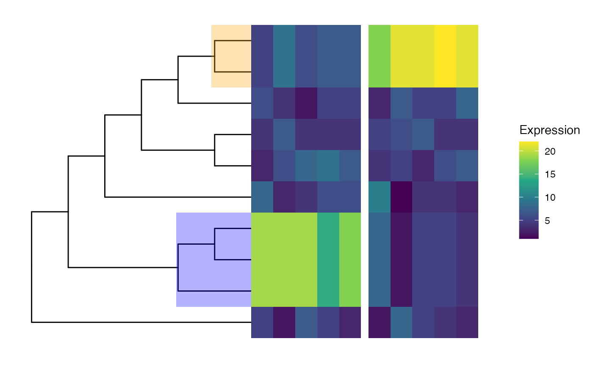
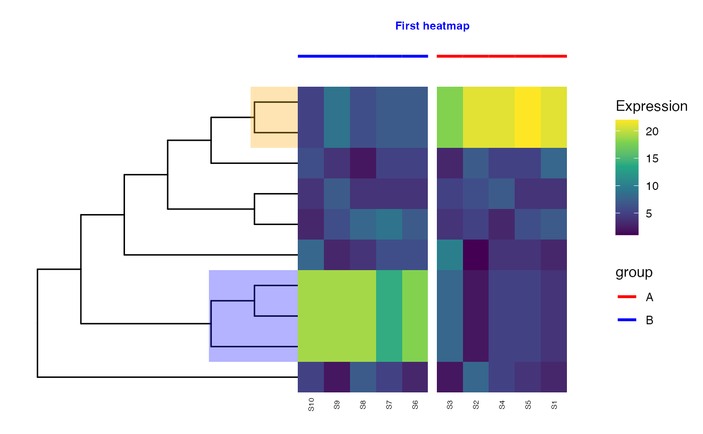
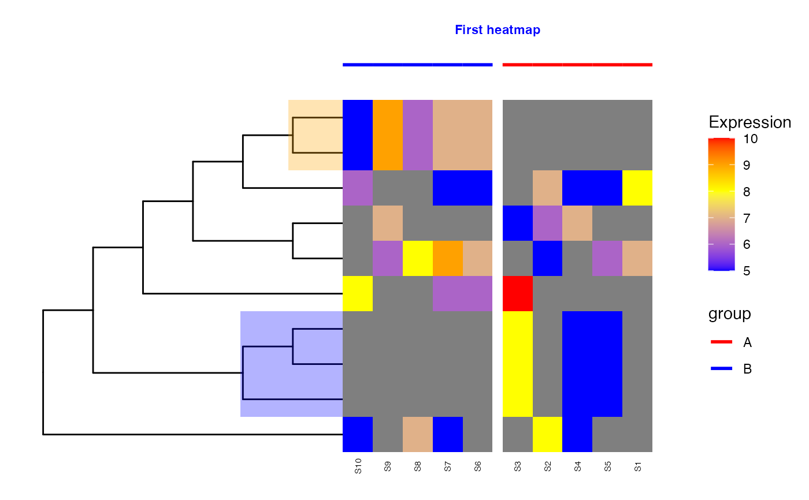

R/TreeHeatmap.R
TreeHeatmap.RdGenerate a heatmap corresponding to an arbitrary aggregation level of a tree.
TreeHeatmap(
tree,
tree_fig,
hm_data,
tree_hm_gap = 0,
rel_width = 1,
cell_line_color = NA,
cell_line_size = 0,
column_order = NULL,
column_split = NULL,
column_split_gap = 0.2,
column_split_label = NULL,
split_label_fontface = "bold",
split_label_color = "black",
split_label_size = 3,
split_label_angle = 0,
split_label_offset_x = 0,
split_label_offset_y = 2,
split_label_hjust = 0.5,
split_label_vjust = 0,
column_anno = NULL,
column_anno_size = 1,
column_anno_color = NULL,
column_anno_gap = 0.1,
legend_title_hm = "Expression",
legend_title_column_anno = "group",
show_colnames = FALSE,
colnames_position = "top",
colnames_angle = 0,
colnames_offset_x = 0,
colnames_offset_y = 0,
colnames_size = 4,
colnames_hjust = 0.5,
show_rownames = FALSE,
rownames_position = "right",
rownames_angle = 0,
rownames_offset_x = 0,
rownames_offset_y = 0,
rownames_size = 4,
rownames_hjust = 0.5,
rownames_label = NULL,
show_title = FALSE,
title_hm = "First heatmap",
title_fontface = "bold",
title_color = "black",
title_size = 3,
title_angle = 0,
title_offset_x = 0,
title_offset_y = 2,
title_hjust = 0.5,
cluster_column = FALSE,
dist_method = "euclidean",
hclust_method = "ave",
show_row_tree = TRUE
)A phylo object.
A ggtree object corresponding to tree. This
will be used to represent the tree in the resulting figure.
A data.frame with the values to show in the heatmap.
The row names should correspond to the nodes of tree.
A numeric scalar specifying the gap between the tree and the heatmap.
A numeric scalar specifying the width of heatmap relative to
the width of the tree. For example, if rel_width = 1, the width of
the heatmap is the same as the width of the tree.
A color for the lines separating cells in the heatmap.
A numeric scalar specifying the line width for lines separating cells in the heatmap.
A character vector specifying the display order of the
columns in the heatmap. Should correspond to the column names of
hm_data. Ignored when column_split is provided.
A named character vector that provides the grouping
information used to split the columns in the heatmap. The names should
correspond to the column names of hm_data.
A numeric scalar specifying the gap between the groups of split columns in the heatmap.
A named character vector to label the column split.
The names should correspond to the values in column_split.
The fontface of the labels of the column split.
The color of the the labels of the column split.
The size of the the labels of the column split.
The angle of the the labels of the column split.
A numeric value to shift the labels of the column split along the x-axis.
A numeric value to shift the labels of the column split along the y-axis.
The horizontal justification for the labels of the column split: e.g. 0 (left aligned); 0.5 (centered); 1 (right aligned).
Similar to split_label_hjust, but controls
vertical justification.
A named vector to specify labels that are used to annotate the columns of heatmap.
A numeric value to specify the size of the annotation bar.
A named vector to specify colors that are used to annotate the columns of the heatmap.
A numeric value to specify the gap between the column annotation bar and the heatmap.
The legend title of the heatmap.
The legend title of the column annotation.
A logical value to specify whether column names should be displayed.
The position of column names, either "top" or "bottom".
A numeric scalar specifying the angle of column names.
A numeric value to shift column names on the x-axis.
A numeric value to shift column names on the y-axis.
A numeric value to specify the size of column names.
The horizontal justification for column names: e.g. 0 (left aligned); 0.5 (centered); 1 (right aligned).
A logical value to specify whether row names should be displayed.
The position of the row names, either "right" or "left".
A numeric value specifying the angle of row names.
A numeric value to shift row names on the x-axis.
A numeric value to shift row names on the y-axis.
A numeric value to specify the size of row names.
The horizontal justification for row names: e.g. 0 (left aligned); 0.5 (centered); 1 (right aligned).
A named vector to annotate the rows of the heatmap instead of the row names of hm_data.
A logical value to specify whether the title should be displayed.
The title of the heatmap.
The fontface of the title.
The color of the title.
The size of the title.
The angle of the title.
A numeric value to shift the title along the x-axis.
A numeric value to shift the title along the y-axis.
The horizontal justification for the title: e.g. 0 (left aligned); 0.5 (centered); 1 (right aligned).
A logical scalar, specifying whether columns of the heatmap should be clustered by similarity. This is ignored when column_order is given.
See method in dist. The
distance method used for clustering columns.
See method in hclust. The
clustering method used for clustering columns.
A logical scalar (default TRUE). If FALSE,
the figure provided in tree_fig is not shown.
A ggtree object.
suppressPackageStartupMessages({
library(TreeSummarizedExperiment)
library(ggtree)
library(ggplot2)
library(scales)
})
## Load example data (tiny tree with corresponding count matrix)
tse <- readRDS(system.file("extdata", "tinytree_counts.rds",
package = "treeclimbR"))
## Prepare the tree figure
tree_fig <- ggtree(rowTree(tse), branch.length = "none",
layout = "rectangular") +
geom_hilight(node = 18, fill = "orange", alpha = 0.3) +
geom_hilight(node = 13, fill = "blue", alpha = 0.3)
tree_fig
## Simple heatmap with tree
TreeHeatmap(tree = rowTree(tse), tree_fig = tree_fig,
hm_data = SummarizedExperiment::assay(tse, "counts"))
## Aggregate counts for each of the highlighted subtrees
tseagg <- aggTSE(
tse,
rowLevel = c(13, 18,
setdiff(showNode(tinyTree, only.leaf = TRUE),
unlist(findDescendant(tinyTree, node = c(13, 18),
only.leaf = TRUE)))))
## Visualize aggregated heatmap with tree
TreeHeatmap(tree = rowTree(tseagg), tree_fig = tree_fig,
hm_data = SummarizedExperiment::assay(tseagg, "counts"))
## Cluster columns
TreeHeatmap(tree = rowTree(tseagg), tree_fig = tree_fig,
hm_data = SummarizedExperiment::assay(tseagg, "counts"),
cluster_column = TRUE)
## Split columns
col_split <- ifelse(colnames(tseagg) %in% paste0("S", seq_len(5)), "A", "B")
names(col_split) <- colnames(tseagg)
TreeHeatmap(tree = rowTree(tseagg), tree_fig = tree_fig,
hm_data = SummarizedExperiment::assay(tseagg, "counts"),
cluster_column = TRUE, column_split = col_split)

## Annotate columns
col_anno <- col_split
TreeHeatmap(tree = rowTree(tseagg), tree_fig = tree_fig,
hm_data = SummarizedExperiment::assay(tseagg, "counts"),
cluster_column = TRUE, column_split = col_split,
column_anno = col_anno, column_anno_gap = 1)
## Change annotation colors
TreeHeatmap(tree = rowTree(tseagg), tree_fig = tree_fig,
hm_data = SummarizedExperiment::assay(tseagg, "counts"),
cluster_column = TRUE, column_split = col_split,
column_anno = col_anno, column_anno_gap = 1,
column_anno_color = c(A = "red", B = "blue"))
## Add column names
TreeHeatmap(tree = rowTree(tseagg), tree_fig = tree_fig,
hm_data = SummarizedExperiment::assay(tseagg, "counts"),
cluster_column = TRUE, column_split = col_split,
column_anno = col_anno, column_anno_gap = 1,
column_anno_color = c(A = "red", B = "blue"),
show_colnames = TRUE, colnames_position = "bottom",
colnames_angle = 90, colnames_size = 2,
colnames_offset_y = -0.4)
## Add title
TreeHeatmap(tree = rowTree(tseagg), tree_fig = tree_fig,
hm_data = SummarizedExperiment::assay(tseagg, "counts"),
cluster_column = TRUE, column_split = col_split,
column_anno = col_anno, column_anno_gap = 1,
column_anno_color = c(A = "red", B = "blue"),
show_colnames = TRUE, colnames_position = "bottom",
colnames_angle = 90, colnames_size = 2,
colnames_offset_y = -0.4,
show_title = TRUE, title_offset_y = 2,
title_color = "blue")

## Change colors
TreeHeatmap(tree = rowTree(tseagg), tree_fig = tree_fig,
hm_data = SummarizedExperiment::assay(tseagg, "counts"),
cluster_column = TRUE, column_split = col_split,
column_anno = col_anno, column_anno_gap = 1,
column_anno_color = c(A = "red", B = "blue"),
show_colnames = TRUE, colnames_position = "bottom",
colnames_angle = 90, colnames_size = 2,
colnames_offset_y = -0.4,
show_title = TRUE, title_offset_y = 2,
title_color = "blue") +
scale_fill_gradientn(
colours = c("blue", "yellow", "red"),
values = scales::rescale(c(5, 8, 10)),
guide = "colorbar", limits = c(5, 10))
#> Scale for fill is already present.
#> Adding another scale for fill, which will replace the existing scale.
